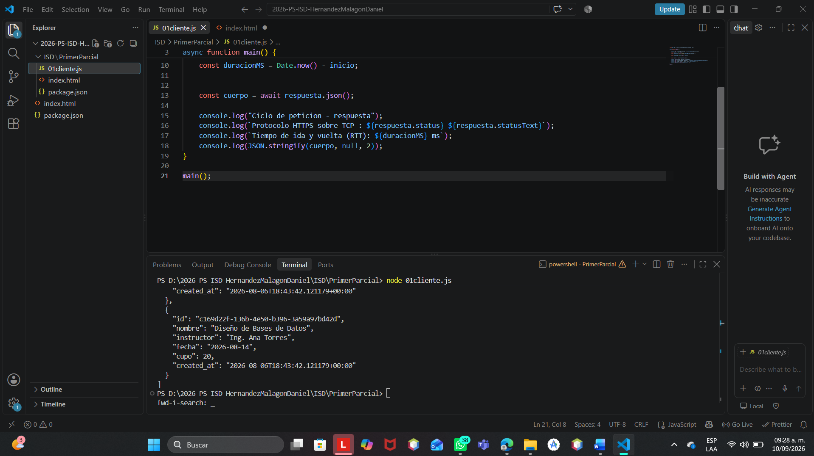

Sí, la conexión fue exitosa. La petición HTTP mediante el método GET se envió correctamente a la API hospedada en Render (proyectobackcecyt9.onrender.com), devolviendo un estado HTTP de respuesta satisfactorio.
Al ejecutar el script de Node.js (01cliente.js), se empleó la API nativa fetch para solicitar los recursos alojados en la ruta /api/talleres. Durante el ciclo de petición-respuesta se midió el tiempo de ida y vuelta (Round Trip Time / RTT) desde la solicitud inicial hasta la llegada de la respuesta. Finalmente, los datos obtenidos en formato JSON se procesaron y mostraron en la consola con un formato legible empleando JSON.stringify().
Se recibió un arreglo con el catálogo de talleres disponibles en el backend. Cada elemento incluye los siguientes datos:
A continuación se muestra la evidencia de la ejecución exitosa en la terminal de Visual Studio Code:
